PROVISIONAL. The lineage is not complete: K2 is NOT_RUN and its selection is UNDEFINED.
Contract V3 is due at lineage completion. This atlas is built from the saved arrays of the scored runs (seeds 7-9, 12 s,
engine JaxFNE 0.5.8, CPU; spec text at 46899e2, whose seal status is in receipt section 10). The G1 falsification (per seed, not pooled) is in the receipt
docs/receipts/lansa_r2_scored_runs_2026-11-26.md.
| contract item | what | status here | state |
|---|---|---|---|
| V0 | construction | rule-based block schematic; units S, M, D; depths are thickness fractions relative to L4; not HSPICE; contract elements not drawn are listed on the figure | present, partial |
| V1 | initial 1 s raster | sampled cells, seed 7 smoke run, 0-1 s; the earlier full-population image is kept in archive/ | present, sampled |
| V2 | final raster | sampled cells, scored seeds 7-9: 0-1 s (same window as V1) and 11-12 s | present, sampled |
| connectivity | rule table | 33 construction rules, realised edge counts (seed 7) | present |
| raster | raster | as V2 | present, sampled |
| rates | population rates | per block, mean over seeds 7-9, with the scorer's 2 s discard marked | present |
| field / LFP proxy | RWS proxy and scored spectra | the scored proxy and estimator; qualified: not a potential | present, qualified |
| conductances | g_nS | 1 ms means, seed 7, first 2 s | present |
| membrane dynamics | V(t) | the driver does not record membrane potential | NOT RECORDED |
| I_net | net synaptic current | the driver does not record it | NOT RECORDED |
| H, A, m(H) | H-state, adaptation | the lineage has no H-state (AdEx populations) | NOT APPLICABLE |
| plastic weights | effective weights | the lineage has no plasticity | NOT APPLICABLE |
| diagnostics | readout, crossing, sensitivity | scorer (unchanged since 46899e2); readout G0 to G1' and K1; crossing per condition (K1 not defined); K2 NOT_RUN | partial (K2 NOT_RUN) |
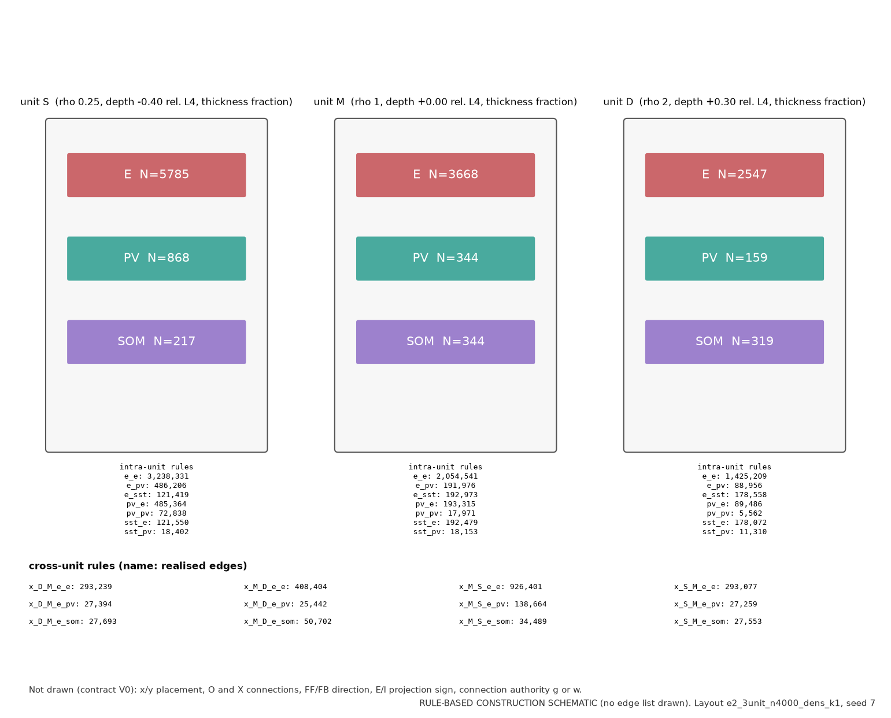
| rule | realised edges |
|---|---|
| e_e_S | 3,238,331 |
| e_pv_S | 486,206 |
| e_sst_S | 121,419 |
| pv_e_S | 485,364 |
| pv_pv_S | 72,838 |
| sst_e_S | 121,550 |
| sst_pv_S | 18,402 |
| e_e_M | 2,054,541 |
| e_pv_M | 191,976 |
| e_sst_M | 192,973 |
| pv_e_M | 193,315 |
| pv_pv_M | 17,971 |
| sst_e_M | 192,479 |
| sst_pv_M | 18,153 |
| e_e_D | 1,425,209 |
| e_pv_D | 88,956 |
| e_sst_D | 178,558 |
| pv_e_D | 89,486 |
| pv_pv_D | 5,562 |
| sst_e_D | 178,072 |
| sst_pv_D | 11,310 |
| x_S_M_e_e | 293,077 |
| x_S_M_e_pv | 27,259 |
| x_S_M_e_som | 27,553 |
| x_M_S_e_e | 926,401 |
| x_M_S_e_pv | 138,664 |
| x_M_S_e_som | 34,489 |
| x_M_D_e_e | 408,404 |
| x_M_D_e_pv | 25,442 |
| x_M_D_e_som | 50,702 |
| x_D_M_e_e | 293,239 |
| x_D_M_e_pv | 27,394 |
| x_D_M_e_som | 27,693 |
Sampled raster: the driver keeps a fixed sample of cells per unit (E 200, PV 50, SOM 50; default_rng(0)); not the full population.
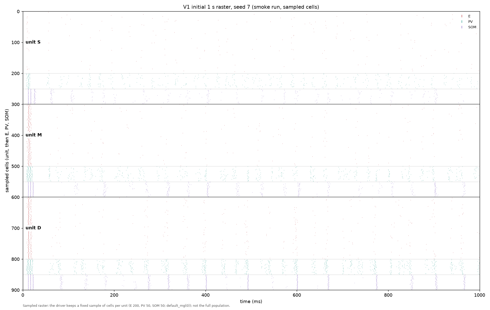
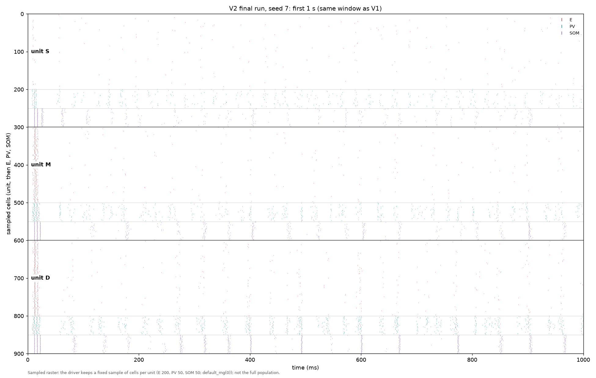
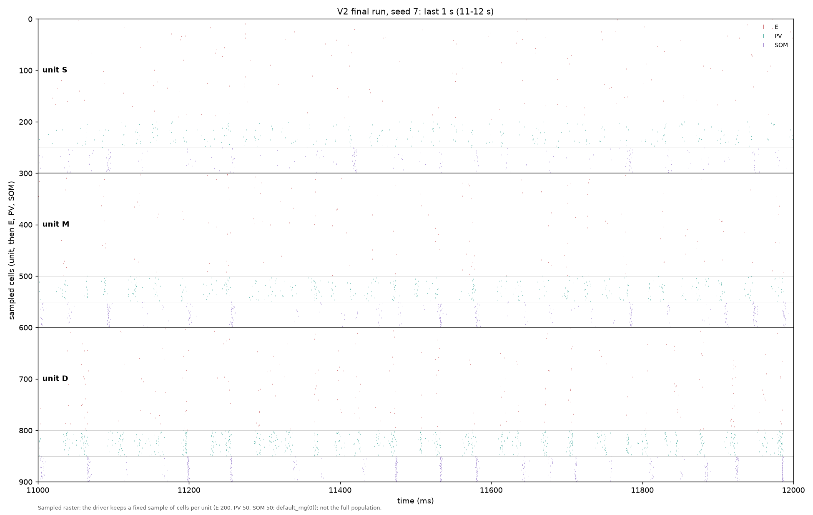
Seeds 8 and 9 are in the parent directory as V2_raster_*_s8.png and V2_raster_*_s9.png.
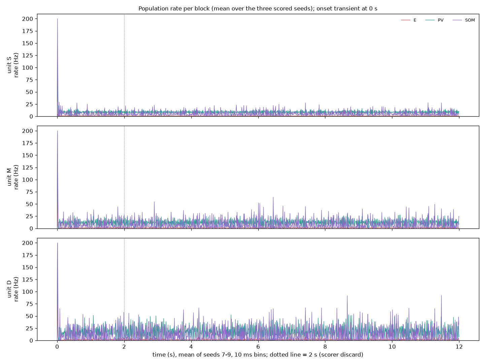
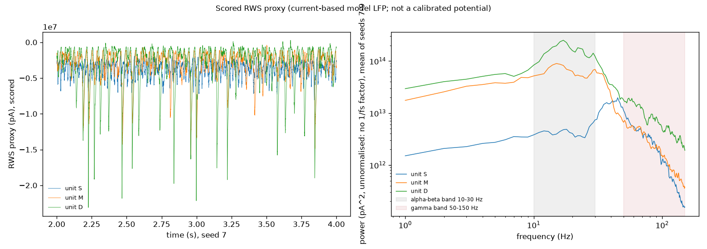
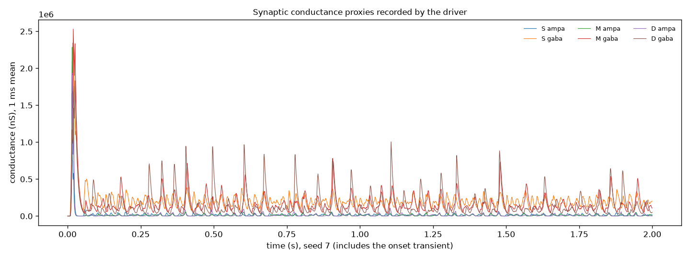
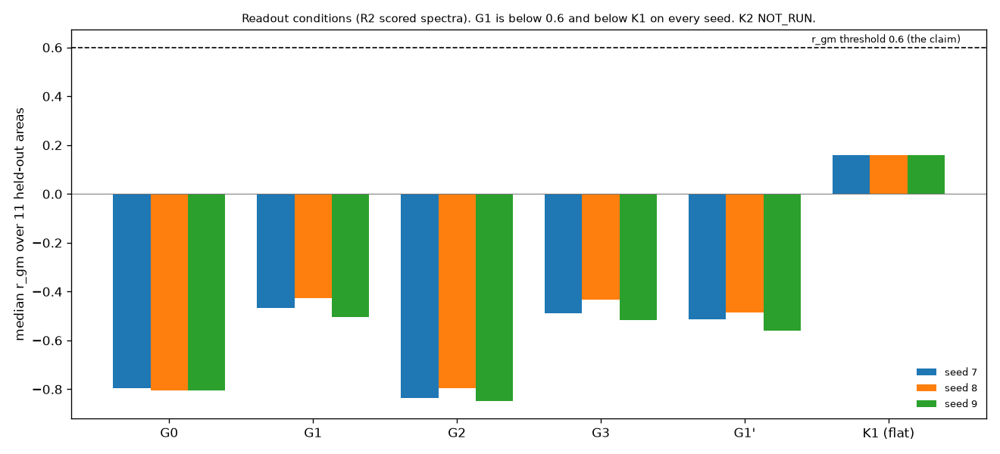
| seed | condition | median r_gm | r_gm ≥ 0.5 | r_gm ≥ 0.6 | r_gm ≥ 0.7 | median r_ab | r_ab ≥ 0.6 | crossing_2se (model profile) |
|---|---|---|---|---|---|---|---|---|
| 7 | G0 | -0.796 | no | no | no | 0.844 | yes | false |
| 7 | G1 | -0.465 | no | no | no | 0.763 | yes | false |
| 7 | G2 | -0.835 | no | no | no | 0.925 | yes | false |
| 7 | G3 | -0.487 | no | no | no | 0.867 | yes | false |
| 7 | G1' | -0.512 | no | no | no | 0.807 | yes | false |
| 7 | K1 (flat) | 0.160 | no | no | no | 0.648 | yes | not defined |
| 8 | G0 | -0.804 | no | no | no | 0.869 | yes | false |
| 8 | G1 | -0.428 | no | no | no | 0.753 | yes | false |
| 8 | G2 | -0.797 | no | no | no | 0.935 | yes | false |
| 8 | G3 | -0.432 | no | no | no | 0.856 | yes | false |
| 8 | G1' | -0.487 | no | no | no | 0.832 | yes | false |
| 8 | K1 (flat) | 0.160 | no | no | no | 0.648 | yes | not defined |
| 9 | G0 | -0.804 | no | no | no | 0.831 | yes | false |
| 9 | G1 | -0.503 | no | no | no | 0.765 | yes | false |
| 9 | G2 | -0.848 | no | no | no | 0.916 | yes | false |
| 9 | G3 | -0.516 | no | no | no | 0.874 | yes | false |
| 9 | G1' | -0.560 | no | no | no | 0.788 | yes | false |
| 9 | K1 (flat) | 0.160 | no | no | no | 0.648 | yes | not defined |
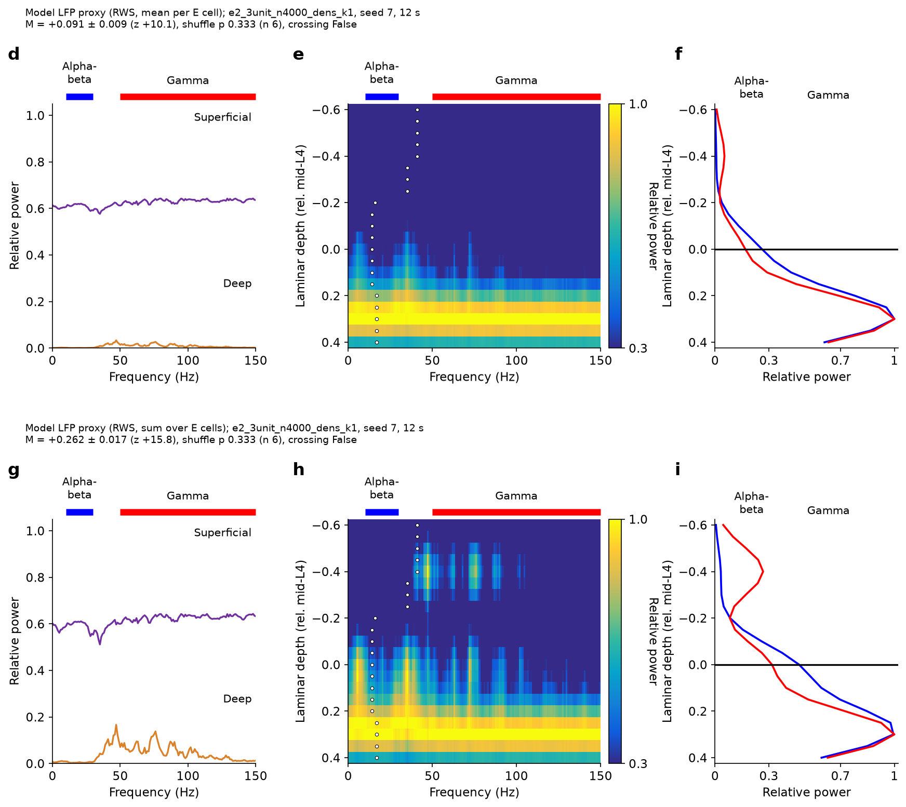
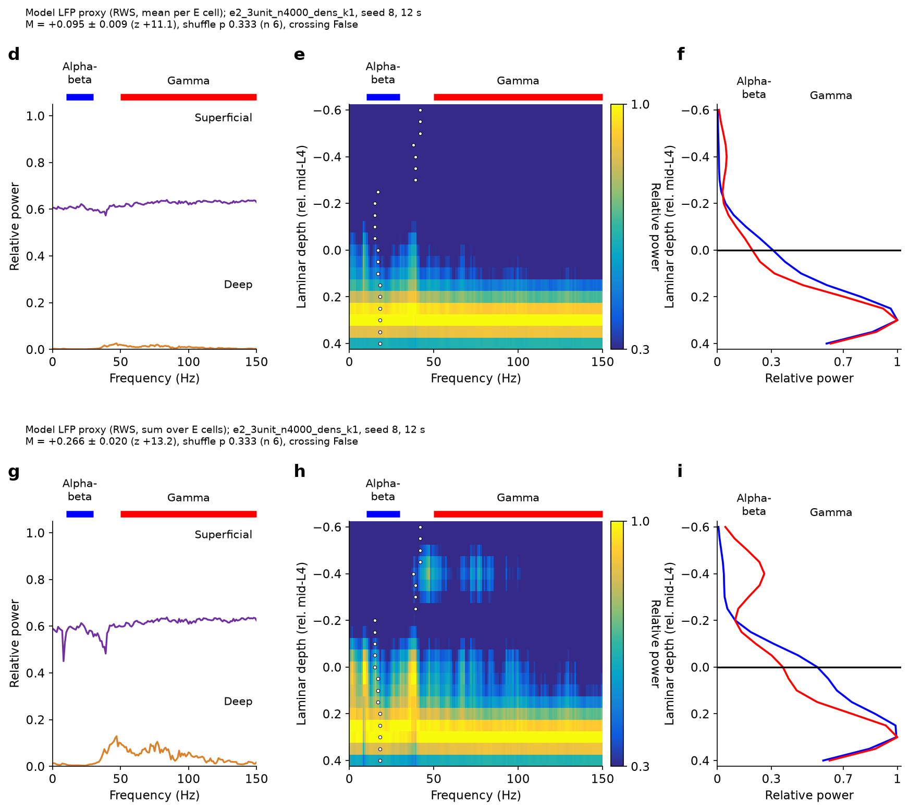
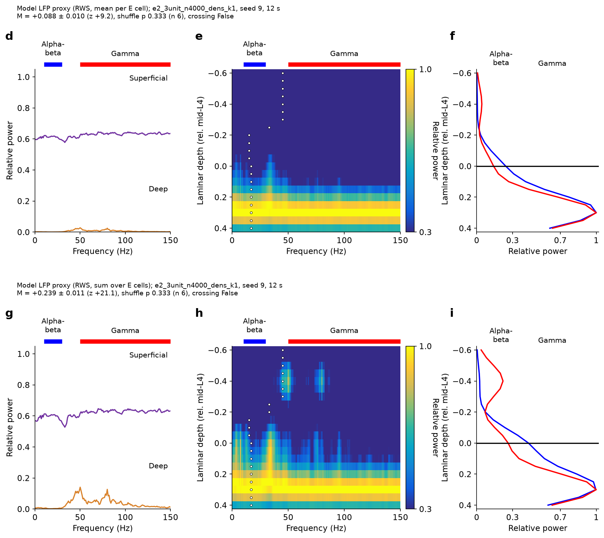